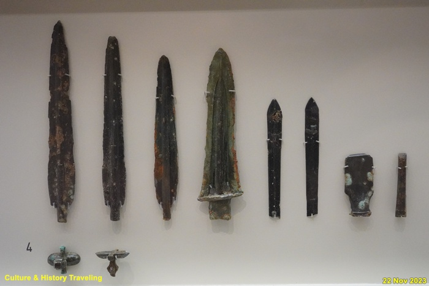
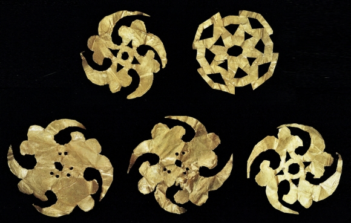
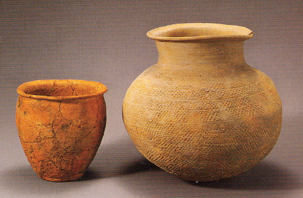

대표 유물 카테고리

철제 무기 – 권력과 전사의 상징
철제 무기는 마한 사회에서 권력과 전사의 상징으로 사용되었으며, 군사적 위세를 드러내는 중요한 유물입니다. 창, 검, 철촉 등 다양한 형태로 출토되어 당시의 무기 제작 기술과 전쟁 문화를 보여줍니다.

장신구 – 아름다움 속 권위의 상징
금, 은, 옥으로 만든 장신구는 단순한 꾸밈을 넘어 신분과 권위를 상징하는 중요한 물건이었습니다. 특히 귀걸이, 목걸이 등은 고대 마한인의 미적 감각과 사회적 지위를 잘 보여줍니다.

토기 – 생활과 문화의 그릇
토기는 일상에서 사용되던 생활용품으로 음식물 저장과 조리에 쓰였습니다. 또한 의식용으로 사용되기도 하며, 마한인의 생활과 문화, 신앙을 엿볼 수 있는 중요한 유물입니다.